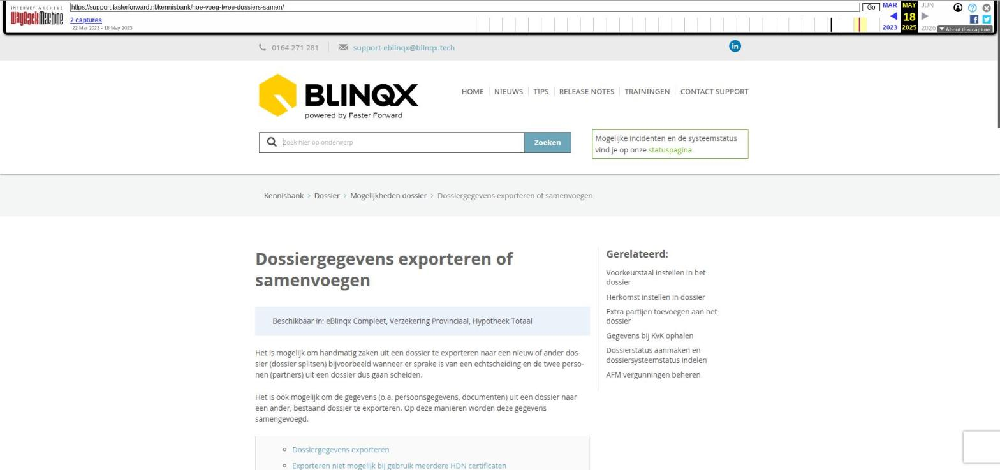

Dossiergegevens exporteren of samenvoegen

Tekstinhoud
Dossiergegevens exporteren of samenvoegen
Beschikbaar in: eBlinqx Compleet, Verzekering Provinciaal, Hypotheek Totaal
Het is mogelijk om handmatig zaken uit een dossier te exporteren naar een nieuw of ander dossier (dossier splitsen) bijvoorbeeld wanneer er sprake is van een echtscheiding en de twee personen (partners) uit een dossier dus gaan scheiden.
Het is ook mogelijk om de gegevens (o.a. persoonsgegevens, documenten) uit een dossier naar een ander, bestaand dossier te exporteren. Op deze manieren worden deze gegevens samengevoegd.
Dossiergegevens exporteren
Exporteren niet mogelijk bij gebruik meerdere HDN certificaten
Registraties
Dossier verwijderen
Dossiergegevens exporteren
Om gegevens uit een dossier naar een nieuw of ander bestaand tot dossier te verplaatsen, neem je onderstaande stappen:
1. Ga naar het dossier waar je vanuit wilt exporteren.
2. Klik op het tabblad Meer – Export – Dossier.
3. Selecteer vervolgens een bestaand dossier door op de blauwe pijl (rechts) te klikken en het desbetreffende dossier op te zoeken waar je naartoe wilt exporteren.
Indien het een nieuw dossier moet worden, bijvoorbeeld bij een scheiding, kies je hier voor nieuw dossier aanmaken.
4. Vervolgens selecteer je alle gegevens die je wilt exporteren.
5. Klik op de knop 'Exporteer geselecteerde gegevens'. Alles is nu geëxporteerd naar het desbetreffende dossier.
Exporteren niet mogelijk bij gebruik meerdere HDN certificaten
Indien er in jouw omgeving gebruikt wordt gemaakt van meerdere HDN certificaten dan is het niet altijd mogelijk om het dossier te exporteren naar een ander kantoor (naar een dossier met hetzelfde kantoor kan wel). Dit is het geval wanneer er in het dossier een lopende HDN aanvraag staat. Dat betekent dat er een hypotheek, levensverzekering of krediet in het dossier staat:
die NIET gearchiveerd of verwijderd is of
er staat een uitgaand HDN bericht (AX, KX, LX, WX of ZX) onder verzonden in de laatste 6 maanden of
met systeemstatus nieuw
Er verschijnt dan een melding dat het niet mogelijk is om het product te exporteren.
Registraties
In beide dossiers komt na het exporteren of importeren een registratie te staan, zodat je kan terugzien of er een export of import heeft plaatsgevonden.
Dossier verwijderen
Indien het dossier waaruit geëxporteerd is geen inhoud meer heeft, kan je deze helemaal 'leeg' maken of permanent verwijderen, zodat er in de toekomst ook niets meer aan dit dossier wordt gekoppeld. Let op: alleen het type klantdossier en leveranciersdossier kan je verwijderen indien je hier de rechten voor hebt.
Laatste update: 23 juli 2024
Was deze informatie nuttig?
Ja Nee